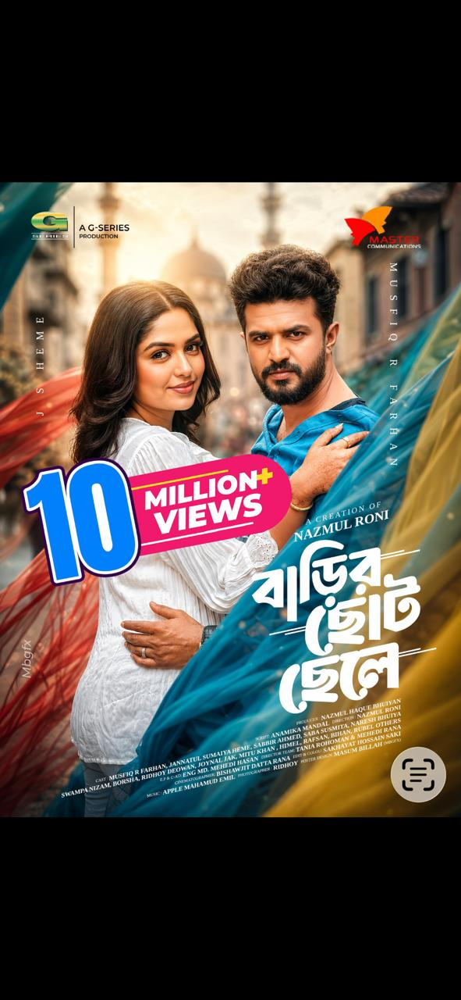
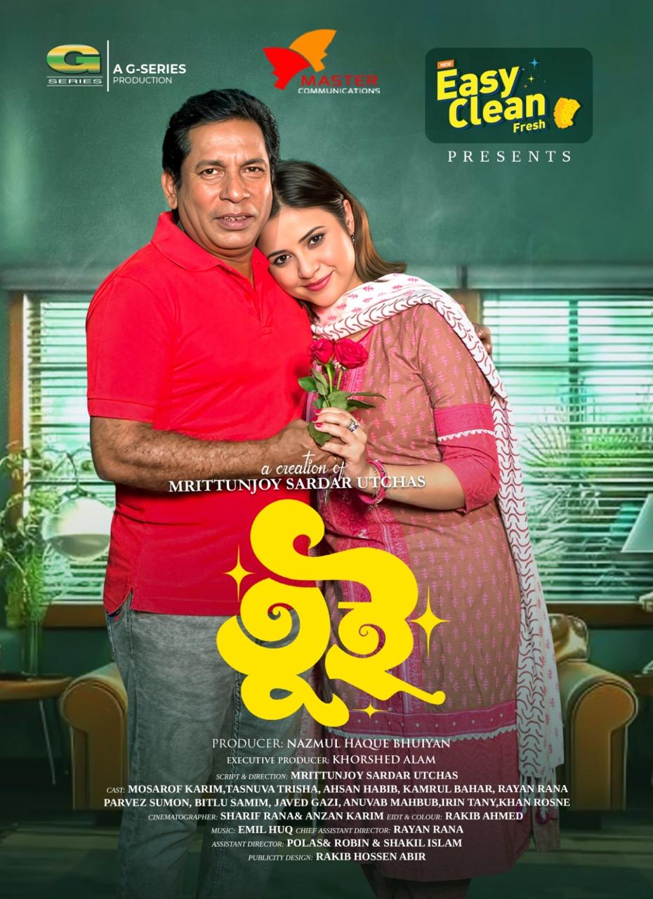
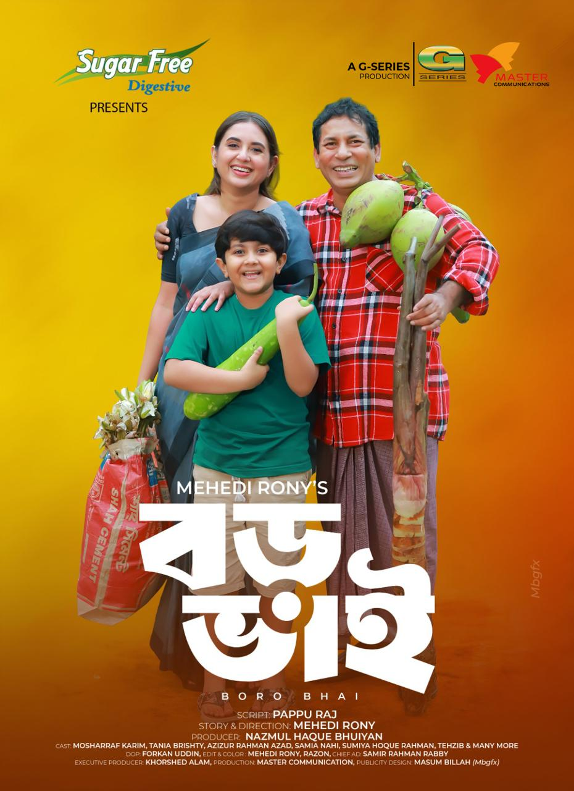
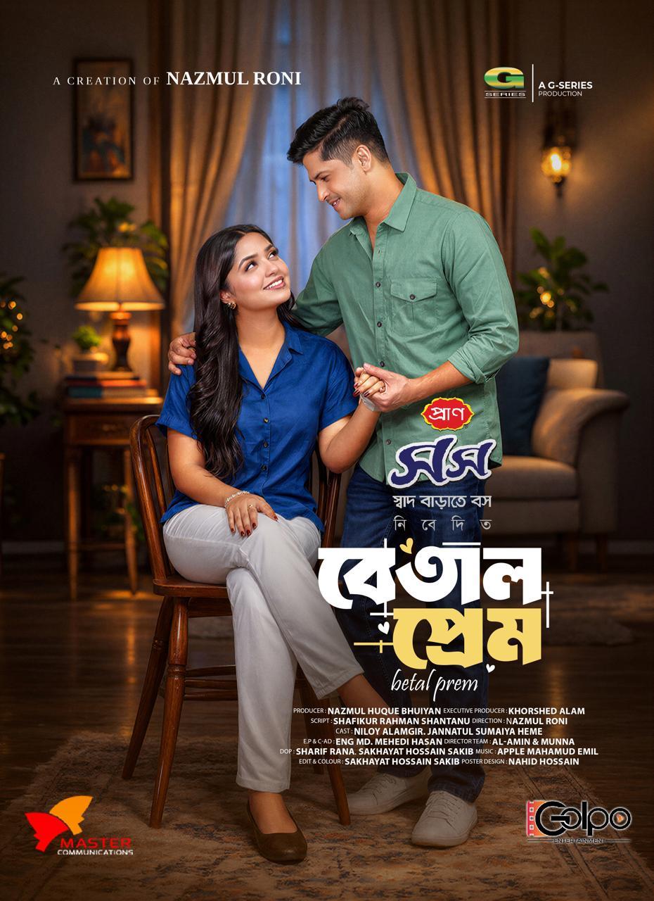
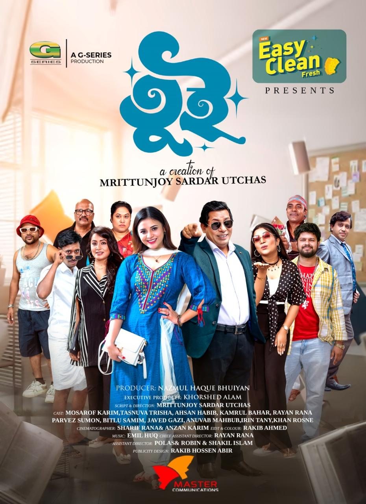
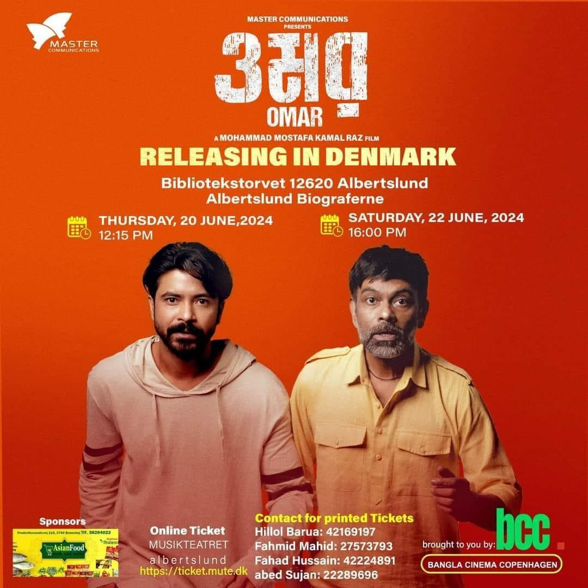
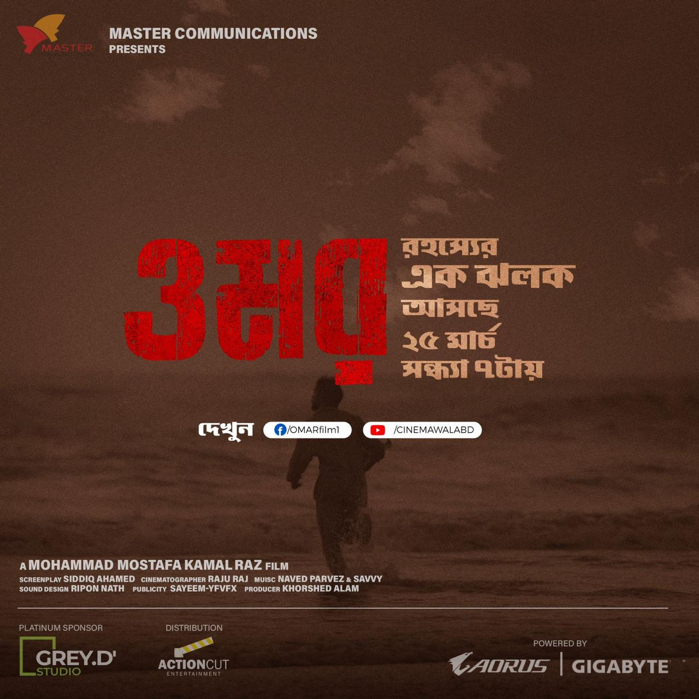

01
01Scroll to enter↓
Independent film studio · Dhaka / Bangladesh বাংলার গল্প
Stories
with a pulse.
We create films and natok with stories that stay with people long after the credits.
বাংলার গল্প, আমাদের পর্দায়

MC / 2024Frame no. 0047
PLAY
THE
REAL
THE
REAL
Scroll to discover↓
Selected work 01—07
A few stories
from home.
01
02 03
03 04
04 05
05
05
0506

07
08 09
09
10
0601 / 13
The long take 02
We believe the best stories are felt before they are understood.
Master Communications is an independent Bangladeshi film studio built around a simple instinct: find the human pulse inside every story. We bring clarity, care, and a little bit of beautiful chaos to every film and natok we make.
More about us ↗What we do 03
From first idea
to final cut.
01
Films
Feature stories with a distinct voice, made to stay with an audience.
↗02
Natok
Human stories rooted in real feeling, culture, and everyday life.
↗03
Original Stories
From the first idea to the final cut, we build stories with a pulse.
↗